library(ggplot2)
library(usmap)
library(data.table)
library(kableExtra)
library(scales)
library(stringr)
library(purrr)
library(here)
library(magrittr)
library(devtools)4 Exploring US Census data with visualization
Load the Required R Packages from CRAN:
Load the packages ‘deandevl/RcensusPkg’ and ‘deandevl/RplotterPkg’.
devtools::install_github('deandevl/RcensusPkg')
devtools::install_github('deandevl/RplotterPkg')4.1 Basic Census visualization with ggplot2
Gather the data for our first ggplot2 plot.
From the 2016-2020 “acs/acs5” data set obtain the median household income and age data by county in the state of Georgia.
Call RcensusPkg::get_vintage_data():
ga_fips <- usmap::fips("GA")
vars <- c("B19013_001E", "B19013_001M", "B01002_001E", "B01002_001M")
ga_dt <- RcensusPkg::get_vintage_data(
dataset = "acs/acs5",
vintage = 2020,
vars = vars,
region = "county:*",
regionin = paste0("state:", ga_fips),
) %>%
data.table::setnames(., old = vars, new = c("medincE","medincM","medageE","medageM")) %>%
.[, `:=`(medincE = as.numeric(medincE), medageE = as.numeric(medageE))] %>%
.[, .(GEOID,NAME,medincE,medageE)] | GEOID | NAME | medincE | medageE |
|---|---|---|---|
| 13001 | Appling County, Georgia | 37924 | 39.9 |
| 13003 | Atkinson County, Georgia | 35703 | 35.9 |
| 13005 | Bacon County, Georgia | 36692 | 36.5 |
| 13007 | Baker County, Georgia | 34034 | 52.2 |
| 13011 | Banks County, Georgia | 50912 | 41.5 |
| 13013 | Barrow County, Georgia | 62990 | 36.0 |
Getting started with ggplot2
Graph the histogram of the variable “medincE” from ga_dt across 30 bins.
RplotterPkg::create_histogram_plot(
df = ga_dt,
aes_x = "medincE",
x_title = "Median Income",
y_title = "Count",
rot_y_tic_label = TRUE,
bar_fill = "navy",
bar_color = "white",
bar_lwd = 0.8,
bins = 30,
x_major_breaks = seq(20000, 120000, 20000),
x_labels = function(x) paste0("$", x/1000,"k")
)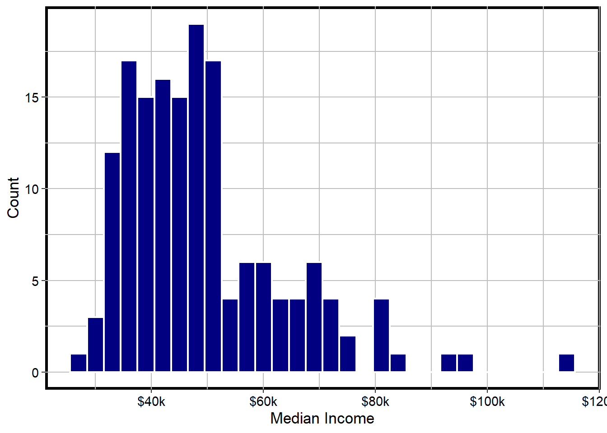
Graph the histogram of the variable “medincE” across 15 bins.
RplotterPkg::create_histogram_plot(
df = ga_dt,
aes_x = "medincE",
x_title = "Median Income",
y_title = "Count",
rot_y_tic_label = TRUE,
bar_fill = "navy",
bar_color = "white",
bar_lwd = 0.8,
bins = 15,
x_major_breaks = seq(20000, 120000, 20000),
x_labels = function(x) paste0("$", x/1000,"k")
)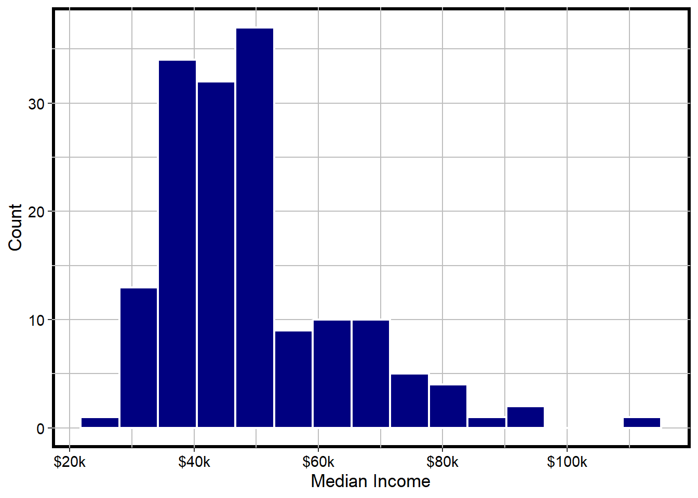
Graph the box-plot (box-and-whisker) of “medincE”.
RplotterPkg::create_box_plot(
df = ga_dt,
aes_y = "medincE",
x_title = " ",
y_title = "Median Income",
box_color = "black",
box_line_width = 1.0,
box_fill = "navy",
box_alpha = 0.7,
rot_y_tic_label = TRUE,
y_scientific = FALSE
)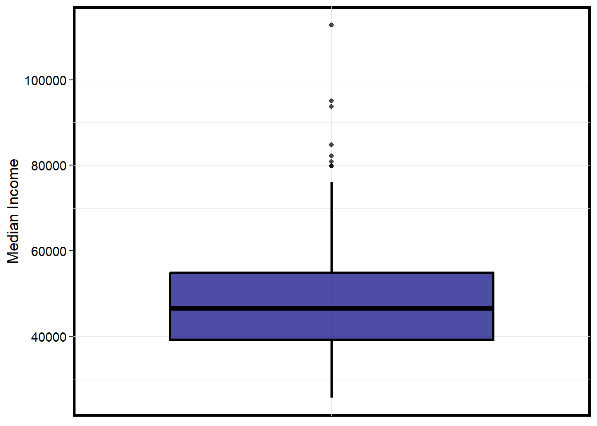
4.1.2 Visualizing multivariate relationships with scatter plots
From the above Georgia household data frame ga_dt produce a scatter plot of “medageE” vs “medincE”.
RplotterPkg::create_scatter_plot(
df = ga_dt,
aes_x = "medageE",
aes_y = "medincE",
x_title = "Median Age",
y_title = "Median Income",
rot_y_tic_label = TRUE,
pts_fill = "navy",
pts_size = 2.0,
x_y_scientific = c(FALSE, FALSE)
)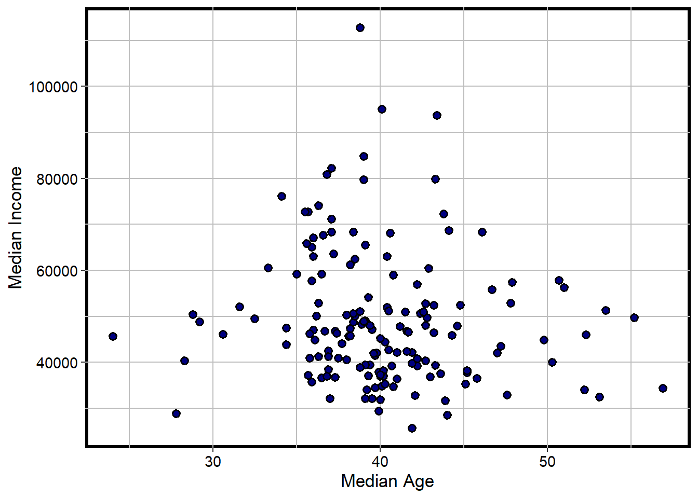
In measuring the relationship between age and income, the R language offers two simple functions. First, the stats::lm() function can be used to fit a linear model. Second, we can submit the resulting stats::lm() object to stats:predict() and return fitted values along with per point standard errors for computing upper/lower confidence bands for the fit.
Define a simple linear regression between variables “medageE” and “medinc E” from the ga_dt data frame using stats::lm().
Use stats::lm() to define the linear model:
age_income_model <- stats::lm(medincE ~ medageE, data = ga_dt)Submit the model to stats::predict() and return the fitted values along with computing the upper/lower confidence values:
a_predict <- stats::predict(object = age_income_model, se.fit = TRUE)
ci_lower <- a_predict$fit - (2 * a_predict$se.fit)
ci_upper <- a_predict$fit + (2 * a_predict$se.fit)Append the fitted and confidence level values to ga_dt:
ga_dt[, `:=`(fit = a_predict$fit, ci_lower = ci_lower, ci_upper = ci_upper)]Plot the data using RplotterPkg::create_scatter_plot():
RplotterPkg::create_scatter_plot(
df = ga_dt,
aes_x = "medageE",
aes_y = "medincE",
aes_CI_lwr = "ci_lower",
aes_CI_upr = "ci_upper",
x_title = "Median Age",
y_title = "Median Income",
rot_y_tic_label = TRUE,
pts_fill = "navy",
pts_size = 2.0,
x_y_scientific = c(FALSE, FALSE),
CI_show_ribbon = TRUE
) + ggplot2::geom_line(aes(y = ga_dt$fit), color="blue", linewidth=1.5)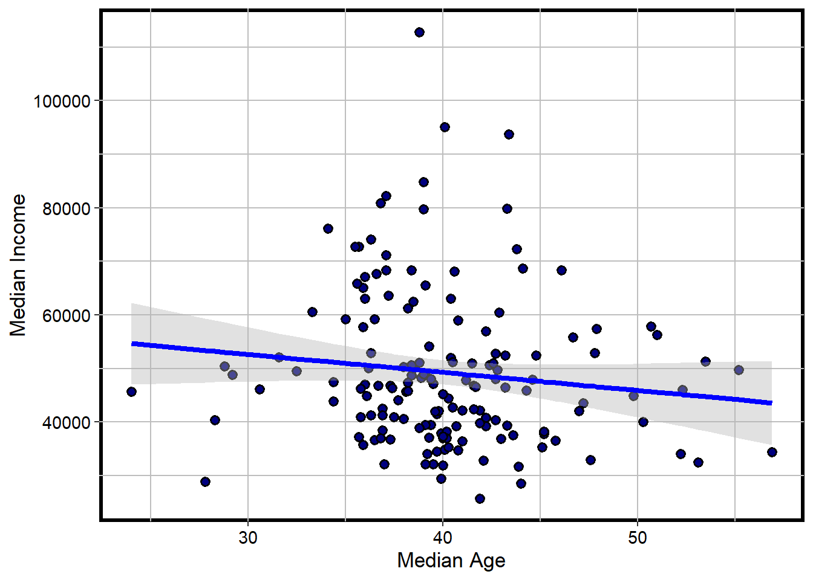
4.2 Customizing ggplot2 visualizations
As demonstrated in the above plots the RplotterPkg:: provides easy functional based customization of many of ggplot2’s parameters.
To continue with the customization…
Show the percent of commuters that take public transportation to work for the largest metropolitan areas in the United States for vintage 2019.
Get the description of variables ID “DP03_0021PE” and “B01003_001E” in the “acs/acs1/profile” and “acs/acs1” data sets respectively for vintage 2019:
DP03_0021PE_dt <- RcensusPkg::get_variable_names(
dataset = "acs/acs1/profile",
vintage = 2019,
vars = "DP03_0021PE"
)
B01003_001E_dt <- RcensusPkg::get_variable_names(
dataset = "acs/acs1",
vintage = 2019,
vars = "B01003_001E"
)
DP03_0021PE_B01003_001E_dt <- rbind(DP03_0021PE_dt,B01003_001E_dt)| name | label | concept | required | predicateType |
|---|---|---|---|---|
| DP03_0021PE | Percent!!COMMUTING TO WORK!!Workers 16 years and over!!Public transportation (excluding taxicab) | SELECTED ECONOMIC CHARACTERISTICS | NA | float |
| B01003_001E | Estimate!!Total | TOTAL POPULATION | NA | int |
We have both percent estimate with acronym of “DP03_0021PE” and “B01003_001E” available. Get the percentage of workers commuting on public transportation.
Use RcensusPkg::get_vintage_data():
commute_percent_dt <- RcensusPkg::get_vintage_data(
dataset = "acs/acs1/profile",
vintage = 2019,
vars = c("DP03_0021PE", "DP03_0021PM"),
region = "metropolitan statistical area/micropolitan statistical area"
) %>%
data.table::setnames(., old = c("DP03_0021PE", "DP03_0021PM"), new = c("estimate", "moe")) %>%
.[, `:=`(variable = "DP03_0021P", estimate = as.numeric(estimate), moe = as.numeric(moe))] %>%
.[, .(GEOID, NAME, variable, estimate, moe)] %>%
.[order(-estimate)] %>%
.[1:20,]| GEOID | NAME | variable | estimate | moe |
|---|---|---|---|---|
| 35620 | New York-Newark-Jersey City, NY-NJ-PA Metro Area | DP03_0021P | 31.6 | 0.2 |
| 41860 | San Francisco-Oakland-Berkeley, CA Metro Area | DP03_0021P | 18.9 | 0.4 |
| 14460 | Boston-Cambridge-Newton, MA-NH Metro Area | DP03_0021P | 13.4 | 0.4 |
| 47900 | Washington-Arlington-Alexandria, DC-VA-MD-WV Metro Area | DP03_0021P | 13.1 | 0.4 |
| 16980 | Chicago-Naperville-Elgin, IL-IN-WI Metro Area | DP03_0021P | 12.4 | 0.3 |
| 42660 | Seattle-Tacoma-Bellevue, WA Metro Area | DP03_0021P | 10.7 | 0.4 |
Show an unimproved bar chart of the first sorted 20 metro areas from commute_percent_dt – the percentage of commuters from metro areas.
RplotterPkg::create_bar_plot(
df = commute_percent_dt,
aes_x = "NAME",
aes_y = "estimate"
)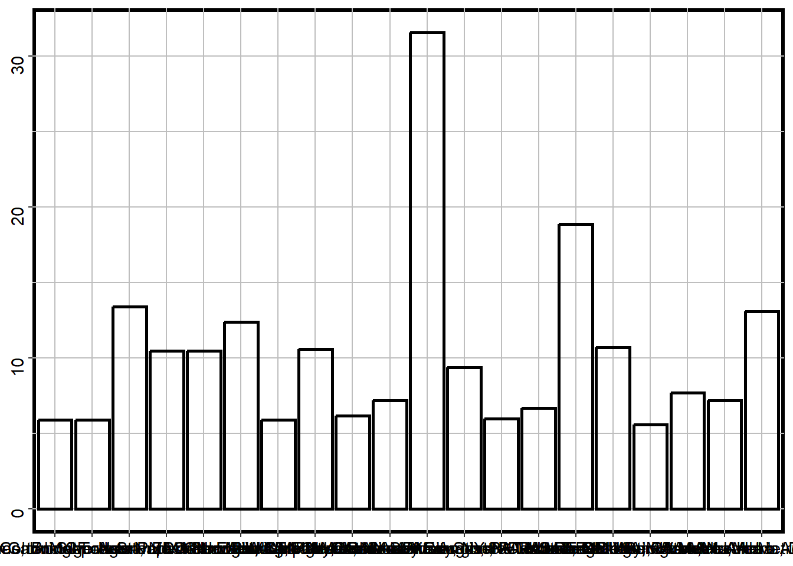
The chart could use improvements in sorting, the x-axis tic labels, axis titles,
4.2.1 Improving plot legibility
Clean up the metropolitan area names using the stringr package.
commute_percent_dt %>%
.[, NAME := stringr::str_remove(NAME, "-.*$")] %>%
.[, NAME := stringr::str_remove(NAME, ",.*$")] %>%
.[, NAME := as.factor(NAME)]Re-display the bar chart with the “estimate” parameter on the x axis and the “NAME” parameter on the y axis; the bars sorted in descending order; re-title the axis’; rotate the y axis tic labels to horizontal.
RplotterPkg::create_bar_plot(
df = commute_percent_dt,
aes_x = "NAME",
aes_y = "estimate",
x_title = "Metro Area",
y_title = "estimate",
rot_y_tic_label = TRUE,
order_bars = "asc",
do_coord_flip = TRUE
)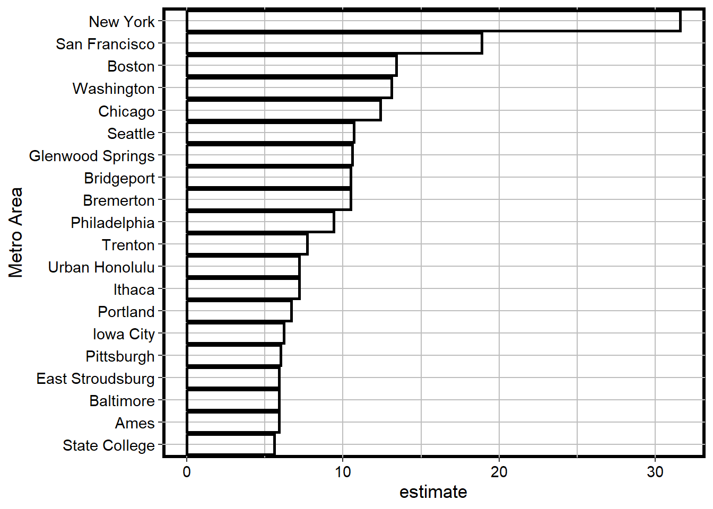
Improve the bar chart further with titles and captions.
RplotterPkg::create_bar_plot(
df = commute_percent_dt,
aes_x = "NAME",
aes_y = "estimate",
title = "Public transit commute share",
subtitle = "2019 1-year ACS estimates",
y_title = "ACS estimate",
caption = "Source: ACS Data Profile variable DP03_0021P via the RcensusPkg R package",
rot_y_tic_label = TRUE,
order_bars = "asc",
do_coord_flip = TRUE
)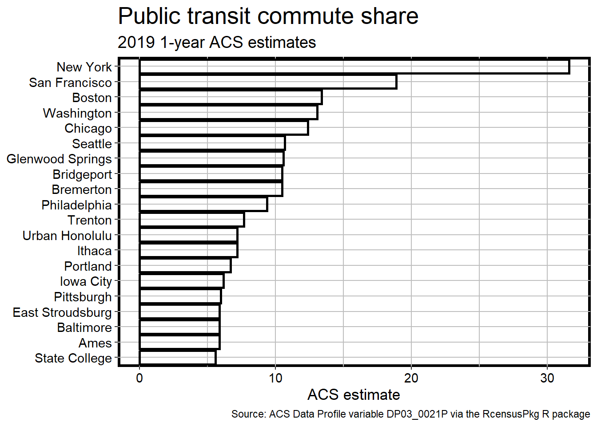
4.2.2 Custom styling of ggplot2 charts
Improve further by customizing the scaling, bar widths/outline, labeling, and color styling.
RplotterPkg::create_bar_plot(
df = commute_percent_dt,
aes_x = "NAME",
aes_y = "estimate",
title = "Public transit commute share",
subtitle = "2019 1-year ACS estimates",
y_title = "ACS estimate",
caption = "Source: ACS Data Profile variable DP03_0021P via the RcensusPkg R package",
rot_y_tic_label = TRUE,
bar_fill = "navy",
bar_alpha = 0.5,
bar_color = "black",
bar_width = 0.8,
bar_lwd = 1,
order_bars = "asc",
do_coord_flip = TRUE,
y_labels = scales::label_percent(scale = 1)
) 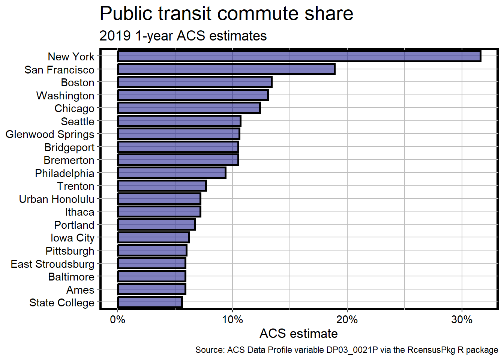
4.2.3 Exporting data visualizations from R
Export the above bar chart as a png image using RplotterPkg::create_bar_plot.
Look for the png image file ‘commute_percent_barchart.png’ in the images folder under the current directory.
image_file_path <- file.path(here::here(), "images", "commute_percent_barchart.png")
RplotterPkg::create_bar_plot(
df = commute_percent_dt,
aes_x = "NAME",
aes_y = "estimate",
title = "Public transit commute share",
subtitle = "2019 1-year ACS estimates",
y_title = "ACS estimate",
caption = "Source: ACS Data Profile variable DP03_0021P via the RcensusPkg R package",
rot_y_tic_label = TRUE,
bar_fill = "navy",
bar_alpha = 0.5,
bar_color = "black",
bar_width = 0.8,
bar_lwd = 1,
order_bars = "asc",
do_coord_flip = TRUE,
y_labels = scales::label_percent(scale = 1),
png_file_path = image_file_path,
png_width_height = c(850, 550)
) 4.3 Visualizing margins of error
…it is also often useful to visualize those margins of error to illustrate the degree of uncertainty around estimates, especially when making comparisons between those estimates.
4.3.1 Data setup
We will be looking at the median household income across counties in Maine from the “acs/acs5” with vintage 2020.
Start by getting the Maine county total population data (variable “P1_001N”) from the 2020 Decennial Census.
me_fips <- usmap::fips("ME")
me_pop_dt <- RcensusPkg::get_vintage_data(
dataset = "dec/pl",
vintage = 2020,
vars = "P1_001N",
region = "county:*",
regionin = paste0("state:", me_fips)) %>%
data.table::setnames(., old = "P1_001N", new = "value") %>%
.[, `:=`(variable = "totalpop", value = as.numeric(value))] %>%
.[, .(GEOID,NAME,variable,value)] %>%
.[order(-value),] | GEOID | NAME | variable | value |
|---|---|---|---|
| 23005 | Cumberland County, Maine | totalpop | 303069 |
| 23031 | York County, Maine | totalpop | 211972 |
| 23019 | Penobscot County, Maine | totalpop | 152199 |
| 23011 | Kennebec County, Maine | totalpop | 123642 |
| 23001 | Androscoggin County, Maine | totalpop | 111139 |
| 23003 | Aroostook County, Maine | totalpop | 67105 |
| 23017 | Oxford County, Maine | totalpop | 57777 |
| 23009 | Hancock County, Maine | totalpop | 55478 |
| 23025 | Somerset County, Maine | totalpop | 50477 |
| 23013 | Knox County, Maine | totalpop | 40607 |
| 23027 | Waldo County, Maine | totalpop | 39607 |
| 23023 | Sagadahoc County, Maine | totalpop | 36699 |
| 23015 | Lincoln County, Maine | totalpop | 35237 |
| 23029 | Washington County, Maine | totalpop | 31095 |
| 23007 | Franklin County, Maine | totalpop | 29456 |
| 23021 | Piscataquis County, Maine | totalpop | 16800 |
There are seventeen counties in Main, ranging in population from a maximum of 303,069 to a minimum of 16,800. In turn, estimates for the counties with small population sizes are likely to be subject to a larger margin of error than those with a larger baseline populations.
Get the Maine total household income along with their margin of errors across the counties for 2020.
We want data for variable acronym “B19013_001” from the 2016-2020 ACS:
me_income_dt <- RcensusPkg::get_vintage_data(
dataset = "acs/acs5",
vintage = 2020,
vars = c("B19013_001E", "B19013_001M"),
region = "county:*",
regionin = paste0("state:", me_fips)) %>%
data.table::setnames(., old = c("B19013_001E", "B19013_001M"), new = c("estimate", "moe")) %>%
.[, `:=`(estimate = as.numeric(estimate), moe = as.numeric(moe))] %>%
.[, NAME := stringr::str_remove(NAME, " County, Maine")] %>%
.[order(estimate)] %>%
.[, NAME := factor(NAME, levels = NAME)] %>%
.[, .(GEOID,NAME,estimate,moe)] %>%
.[order(-moe),] | GEOID | NAME | estimate | moe |
|---|---|---|---|
| 23023 | Sagadahoc | 68039 | 4616 |
| 23015 | Lincoln | 58125 | 3974 |
| 23027 | Waldo | 58034 | 3482 |
| 23007 | Franklin | 51630 | 2948 |
| 23021 | Piscataquis | 42083 | 2883 |
| 23025 | Somerset | 45382 | 2694 |
| 23009 | Hancock | 58345 | 2593 |
| 23013 | Knox | 57794 | 2528 |
| 23017 | Oxford | 49761 | 2380 |
| 23003 | Aroostook | 43791 | 2306 |
| 23029 | Washington | 44847 | 2292 |
| 23031 | York | 68932 | 2239 |
| 23011 | Kennebec | 55368 | 2112 |
| 23001 | Androscoggin | 55002 | 2003 |
| 23019 | Penobscot | 52128 | 1836 |
| 23005 | Cumberland | 76014 | 1563 |
Create a dot plot of Maine’s county household incomes.
RplotterPkg::create_scatter_plot(
df = me_income_dt,
aes_x = "estimate",
aes_y = "NAME",
title = "Median Household Income Estimates",
subtitle = "Counties in Maine from ACS 2016-2020 Survey",
pts_fill = "#12891b",
pts_size = 5.0,
x_title = "ACS estimate",
x_labels = function(x) paste0("$", prettyNum(x, big.mark = ",", scientific = F)),
rot_y_tic_label = TRUE
)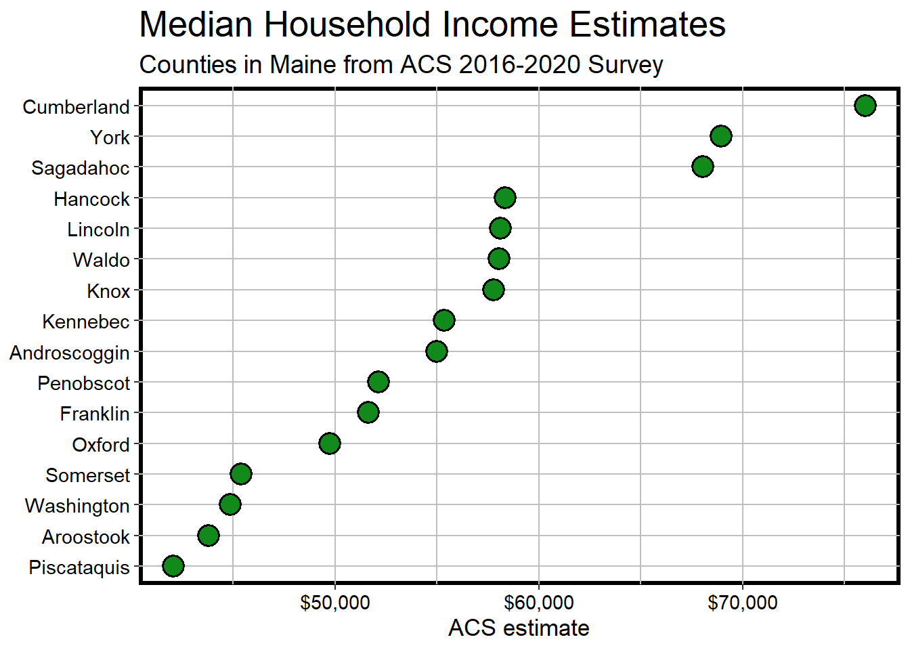
4.3.2 Using error bars for margins of error
Rank the margin of error values for the household incomes in me_income_dt.
Reorder me_income_dt by descending “moe” values:
moe_ranked_dt <- me_income_dt[order(-moe)] %>%
.[, variable := "hhincome"] %>%
.[, .(GEOID,NAME,variable,estimate,moe)] | GEOID | NAME | variable | estimate | moe |
|---|---|---|---|---|
| 23023 | Sagadahoc | hhincome | 68039 | 4616 |
| 23015 | Lincoln | hhincome | 58125 | 3974 |
| 23027 | Waldo | hhincome | 58034 | 3482 |
| 23007 | Franklin | hhincome | 51630 | 2948 |
| 23021 | Piscataquis | hhincome | 42083 | 2883 |
| 23025 | Somerset | hhincome | 45382 | 2694 |
| 23009 | Hancock | hhincome | 58345 | 2593 |
| 23013 | Knox | hhincome | 57794 | 2528 |
| 23017 | Oxford | hhincome | 49761 | 2380 |
| 23003 | Aroostook | hhincome | 43791 | 2306 |
| 23029 | Washington | hhincome | 44847 | 2292 |
| 23031 | York | hhincome | 68932 | 2239 |
| 23011 | Kennebec | hhincome | 55368 | 2112 |
| 23001 | Androscoggin | hhincome | 55002 | 2003 |
| 23019 | Penobscot | hhincome | 52128 | 1836 |
| 23005 | Cumberland | hhincome | 76014 | 1563 |
…margins of error around the estimated median household incomes vary from a low of $1563 (Cumberland County with population of 303069) to a high of $4616 (Sagadahoc County with a population of 36699)
Repeat the above dot plot of household income with error bars around each point showing the degree of uncertainty based on the “moe” values.
RplotterPkg::create_scatter_plot(
df = me_income_dt,
aes_x = "estimate",
aes_y = "NAME",
title = "Median Household Income Estimates",
subtitle = "Counties in Maine from ACS 2016-2020 Survey",
pts_fill = "#12891b",
pts_size = 5.0,
x_title = "ACS estimate",
x_labels = function(x) paste0("$", prettyNum(x, big.mark = ",", scientific = F)),
rot_y_tic_label = TRUE
) + geom_errorbarh(aes(xmin = estimate - moe, xmax = estimate + moe))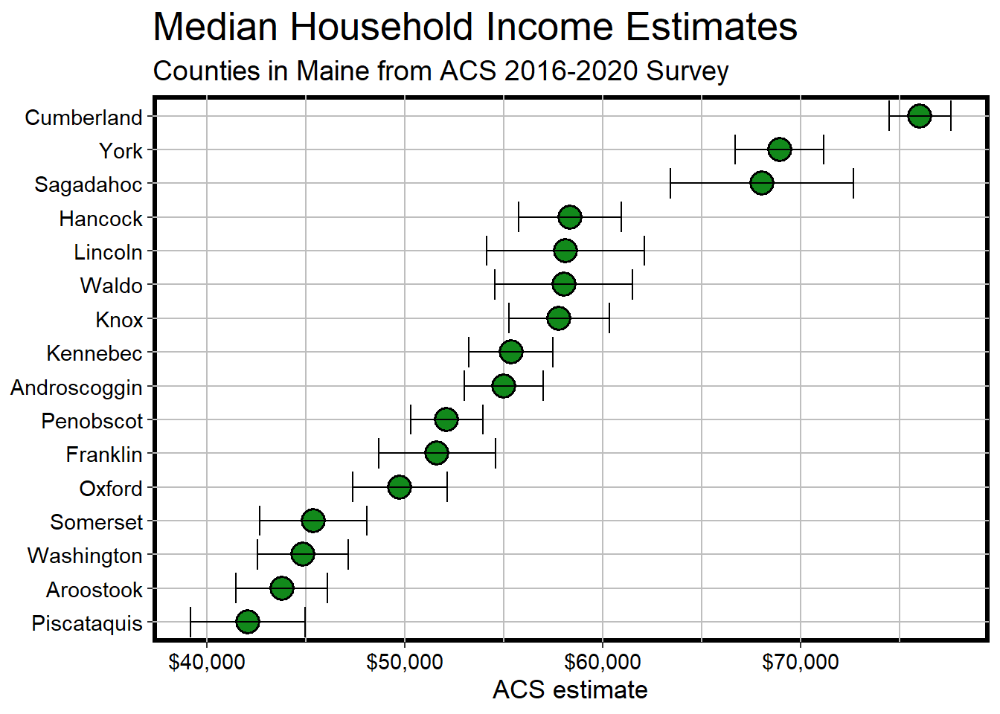
4.4 Visualizing ACS estimates over time
As a time-series visualization example, obtain the median home value (“B25077_001E”) for Deschutes County, Oregon back to 2005 through 2019.
Get the data using RcensusPkg::get_multi_vintage_data():
deschutes_fips <- usmap::fips("OR","Deschutes")
deschutes_val_dt <- RcensusPkg::get_multi_vintage_data(
dataset = "acs/acs1",
vintage_v = 2005:2019,
vars = c("B25077_001E", "B25077_001M"),
region = paste0("county:", substr(deschutes_fips,3,5)),
regionin = paste0("state:", substr(deschutes_fips,1,2))) %>%
data.table::setnames(., old = c("B25077_001E", "B25077_001M", "vintage"), new = c("estimate", "moe", "year")) %>%
.[, `:=`(estimate = as.numeric(estimate), moe = as.numeric(moe))] %>%
.[, variable := "B25077_001"] %>%
.[, `:=`(ci_lwr = estimate - moe, ci_upr = estimate + moe)] %>%
.[, .(year,GEOID,NAME,variable,estimate,moe,ci_lwr,ci_upr)] | year | GEOID | NAME | variable | estimate | moe | ci_lwr | ci_upr |
|---|---|---|---|---|---|---|---|
| 2005 | 41017 | Deschutes County, Oregon | B25077_001 | 236100 | 13444 | 222656 | 249544 |
| 2006 | 41017 | Deschutes County, Oregon | B25077_001 | 336600 | 11101 | 325499 | 347701 |
| 2007 | 41017 | Deschutes County, Oregon | B25077_001 | 356700 | 16765 | 339935 | 373465 |
| 2008 | 41017 | Deschutes County, Oregon | B25077_001 | 331600 | 17104 | 314496 | 348704 |
| 2009 | 41017 | Deschutes County, Oregon | B25077_001 | 284300 | 12652 | 271648 | 296952 |
| 2010 | 41017 | Deschutes County, Oregon | B25077_001 | 260700 | 18197 | 242503 | 278897 |
Draw the Deschutes County home value line chart.
RplotterPkg::create_scatter_plot(
df = deschutes_val_dt,
aes_x = "year",
aes_y = "estimate",
aes_CI_lwr = "ci_lwr",
aes_CI_upr = "ci_upr",
x_title = "Year",
y_title = "ACS estimate",
rot_y_tic_label = TRUE,
y_labels = scales::dollar,
connect = TRUE,
pts_size = 3.0,
pts_fill = "#b136b9",
x_major_breaks = 2005:2019,
x_minor_breaks = NULL,
)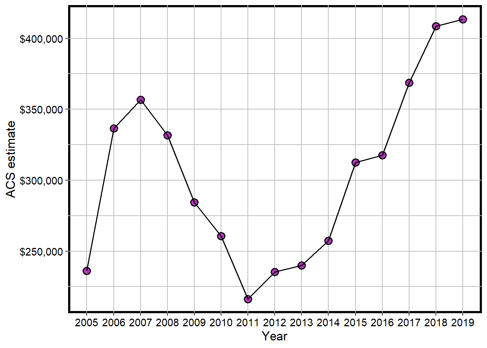
Draw the Deschutes County home value line chart with error ranges.
RplotterPkg::create_scatter_plot(
df = deschutes_val_dt,
aes_x = "year",
aes_y = "estimate",
aes_CI_lwr = "ci_lwr",
aes_CI_upr = "ci_upr",
subtitle = "Median Home Values in Deschutes County, Oregon",
x_title = "Year",
y_title = "ACS estimate",
rot_y_tic_label = TRUE,
y_labels = scales::dollar,
connect = TRUE,
pts_size = 3.0,
pts_fill = "#b136b9",
x_major_breaks = 2005:2019,
x_minor_breaks = NULL,
CI_show_ribbon = TRUE,
CI_ribbon_color = "navy",
CI_show_line = FALSE
)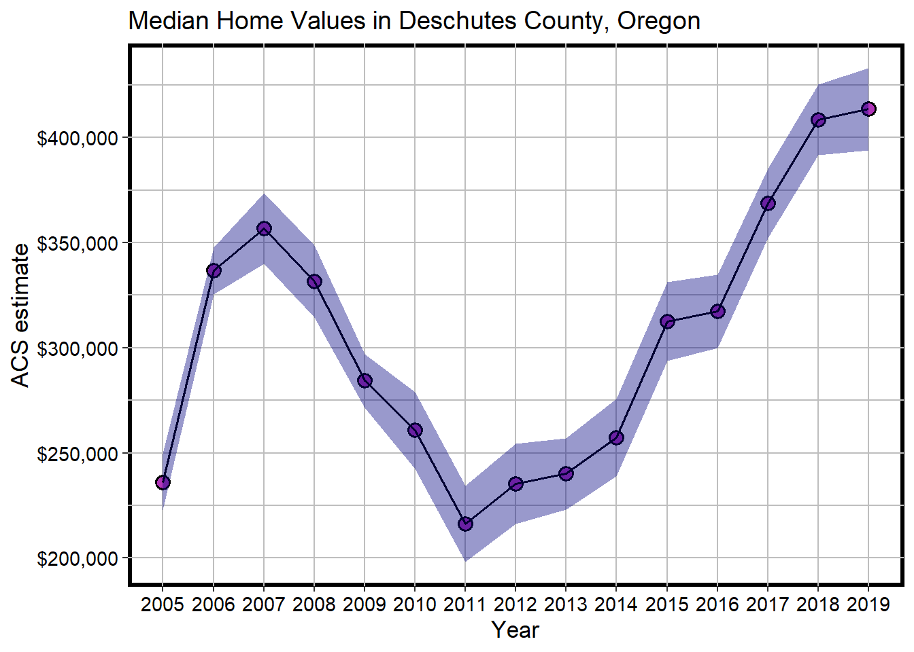
4.5 Exploring age and sex structure with population pyramids
4.5.1 Preparing data from the Population Estimates API
The Population Estimates Program(PEP) offers a dataset named “pep/charagegroups” that has characteristic breakdowns for a number of variables.
Review the variables offered in “pep/charagegroups” for the vintage 2019.
Call RcensusPkg::get_variable_names() for dataset “pep/charagegroups”:
pep_char_vars_dt <- RcensusPkg::get_variable_names(
dataset = "pep/charagegroups",
vintage = 2019
)| name | label | concept | required | predicateType |
|---|---|---|---|---|
| AGEGROUP | Age Group | NA | default displayed | int |
| HISP | Hispanic Origin | NA | default displayed | int |
| NATION | Geography | NA | NA | NA |
| POP | Population | NA | NA | NA |
| RACE | Race | NA | default displayed | int |
| SEX | Sex | NA | default displayed | int |
| STATE | Geography | NA | NA | NA |
Both the “SEX” and “AGEGROUP” are categorical variables with integer values corresponding to string labels.
Retrieve the integer value/label pairs of “SEX” and “AGEGROUP”.
sex_cat_dt <- RcensusPkg::get_category_strings(name = "sex")
agegroup_cat_dt <- RcensusPkg::get_category_strings(name = "agegroup", start_idx = 1, end_idx = 19)Show the “AGEGROUP” values and labels”.
Note that there are a total of 19 value/label pairs for ‘AGEGROUP’.
| val | agegroup_label |
|---|---|
| 0 | All ages |
| 1 | Age 0 to 4 years |
| 2 | Age 5 to 9 years |
| 3 | Age 10 to 14 years |
| 4 | Age 15 to 19 years |
| 5 | Age 20 to 24 years |
| 6 | Age 25 to 29 years |
| 7 | Age 30 to 34 years |
Show the 3 “SEX” category value/label pairs.
| val | sex_label |
|---|---|
| 0 | Both Sexes |
| 1 | Male |
| 2 | Female |
The Census Bureau provides a key to the meaning of these and other PEP related categorical variables here.
Get the “SEX” and “AGEGROUP” variables from the “pep/charagegroups” dataset for the state of Utah, 2019.
Call RcensusPkg::get_vintage_data(): We will use data.tables sex_cat_dt and agegroup_cat_dt from above to re-value the resultant “SEX” and “AGEGROUP” columns.
ut_fips <- usmap::fips("UT")
ut_dt <- RcensusPkg::get_vintage_data(
dataset = "pep/charagegroups",
vintage = 2019,
vars = c("SEX", "AGEGROUP", "POP"),
region = paste0("state:",ut_fips)) %>%
.[, `:=`(SEX = as.numeric(SEX), AGEGROUP = as.numeric(AGEGROUP))] %>%
.[, SEX := sex_cat_dt$sex_label[SEX+1]] %>%
.[, AGEGROUP := agegroup_cat_dt$agegroup_label[AGEGROUP+1]] %>%
data.table::setnames(., old = "POP", new = "value") %>%
.[, .(GEOID,NAME,value,SEX,AGEGROUP)] %>%
na.omit(., cols = "AGEGROUP") %>%
data.table::setorderv(., cols = "SEX")| GEOID | NAME | value | SEX | AGEGROUP |
|---|---|---|---|---|
| 49 | Utah | 3205958 | Both Sexes | All ages |
| 49 | Utah | 247803 | Both Sexes | Age 0 to 4 years |
| 49 | Utah | 258976 | Both Sexes | Age 5 to 9 years |
| 49 | Utah | 267985 | Both Sexes | Age 10 to 14 years |
| 49 | Utah | 253847 | Both Sexes | Age 15 to 19 years |
| 49 | Utah | 264652 | Both Sexes | Age 20 to 24 years |
Prepare data frame ut_dt for plotting the population pyramid by removing rows with “SEX” equal to “Both Sexes” and “AGEGROUP” equal to “All ages”. Also set the “value” values to negative for rows with “AGEGROUP” equal to “Male”.
ut_pyramid_plot_dt <- ut_dt %>%
.[SEX != "Both Sexes"] %>% # remove rows with SEX == "Both sexes"
.[AGEGROUP != "All ages"] %>% # remove rows with AGEGROUP == "All ages"
.[, value := as.numeric(value)] %>% # set value as numeric
.[, value := ifelse(SEX == "Male", -value, value)] %>% # re-value 'value' based on SEX value
.[, AGEGROUP := ifelse(AGEGROUP == "Age 5 to 9 years", "Age 05 to 9 years", AGEGROUP)] %>% # for ordering
.[, AGEGROUP := stringr::str_remove_all(AGEGROUP, "Age\\s|\\syears")] %>% # shorten the AGEGROUP labels
.[, AGEGROUP := as.factor(AGEGROUP)] # make AGEGROUP a factor| GEOID | NAME | value | SEX | AGEGROUP |
|---|---|---|---|---|
| 49 | Utah | 126108 | Female | 05 to 9 |
| 49 | Utah | 23039 | Female | 80 to 84 |
| 49 | Utah | 130045 | Female | 10 to 14 |
| 49 | Utah | 124535 | Female | 15 to 19 |
| 49 | Utah | 128846 | Female | 20 to 24 |
| 49 | Utah | 108654 | Female | 30 to 34 |
4.5.2 Designing and styling the population pyramid
Use RplotterPkg::create_bar_plot() to create the population pyramid from ut_pyramid_plot_dt data.table.
pyramid_bar_plot <- RplotterPkg::create_bar_plot(
df = ut_pyramid_plot_dt,
aes_x = "AGEGROUP",
aes_y = "value",
aes_fill = "SEX",
title = "Population structure in Utah",
x_title = "2019 Census Bureau population estimate",
y_title = "Population Estimate",
caption = "Data source: US Census Bureau population estimates & RcensusPkg",
y_labels = function(y) paste0(abs(y / 1000), "k"),
bar_color = "white",
bar_lwd = 0.5,
bar_width = 0.95,
do_coord_flip = TRUE,
rot_y_tic_label = TRUE,
legend_key_width = 0.75
) + ggplot2::scale_fill_manual(values = c("Female"= "darkred", "Male"="navy"))
pyramid_bar_plot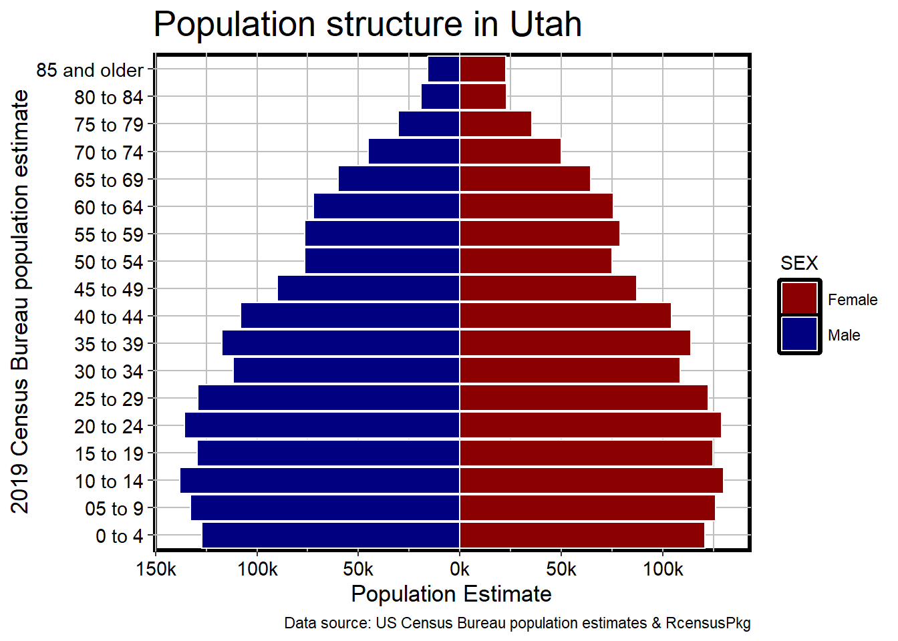
4.6 Visualizing group-wise comparisons
Use multiple plots to compare groups of geographies. An example involves a comparison of median home values by Census tract for six counties in the Portland, Oregon area: Multnomah, which contains the city of Portland, and the suburban counties of Clackamas and Washington. Use the ACS 5-year survey 2020 data set (“acs/acs5”).
Get the fips numbers for six counties:
or_fips <- usmap::fips(state = "OR")
multnomah_fips <- substr(usmap::fips(state = "OR", county = "Multnomah"),3,5)
clackamas_fips <- substr(usmap::fips(state = "OR", county = "Clackamas"),3,5)
washington_fips <-substr(usmap::fips(state = "OR", county = "Washington"),3,5)
yamhill_fips <- substr(usmap::fips(state = "OR", county = "Yamhill"),3,5)
marion_fips <-substr(usmap::fips(state = "OR", county = "Marion"),3,5)
columbia_fips <-substr(usmap::fips(state = "OR", county = "Columbia"),3,5)
tract_fips <- c(multnomah_fips, clackamas_fips, washington_fips, yamhill_fips, marion_fips, columbia_fips)Get all the tract data into one data.table:
home_vals_dt <- NULL
for(a_fips in tract_fips){
tracts_vals_dt <- RcensusPkg::get_vintage_data(
dataset = "acs/acs5",
vintage = 2020,
vars = c("B25077_001E", "B25077_001M"),
region = "tract:*",
regionin = paste0("state:",or_fips,"+county:",a_fips)
)
home_vals_dt <- rbind(home_vals_dt, tracts_vals_dt)
}
home_vals_dt <- home_vals_dt %>%
data.table::setnames(., old = c("B25077_001E", "B25077_001M"), new = c("estimate","moe")) %>%
.[, variable := "B25077_001"] %>%
.[, `:=`(estimate = as.numeric(estimate), moe = as.numeric(moe))] %>%
.[, .(GEOID,NAME,variable,estimate,moe)] %>%
data.table::setorderv(.,cols = "GEOID")| GEOID | NAME | variable | estimate | moe |
|---|---|---|---|---|
| 41005020101 | Census Tract 201.01, Clackamas County, Oregon | B25077_001 | 666700 | 131453 |
| 41005020102 | Census Tract 201.02, Clackamas County, Oregon | B25077_001 | 909000 | 130787 |
| 41005020201 | Census Tract 202.01, Clackamas County, Oregon | B25077_001 | 897400 | 97893 |
| 41005020202 | Census Tract 202.02, Clackamas County, Oregon | B25077_001 | 821200 | 93103 |
| 41005020302 | Census Tract 203.02, Clackamas County, Oregon | B25077_001 | 565600 | 32555 |
| 41005020303 | Census Tract 203.03, Clackamas County, Oregon | B25077_001 | 560000 | 34669 |
Split the “NAME” column into separate columns of “tract”, “county”, “state” based on the embedded comma:
home_vals_dt <- home_vals_dt %>%
.[, c("tract", "county", "state") := tstrsplit(NAME, ",", fixed = TRUE)] %>% # split NAME string into tract,county,state
.[, county := stringr::str_remove(county, " County")] %>%
.[estimate > 0 & moe > 0,] %>% # filter rows for only positive values
.[, county := factor(county)] %>% # county as a factor
.[, .(GEOID,tract,county,state,variable,estimate,moe)]| GEOID | tract | county | state | variable | estimate | moe |
|---|---|---|---|---|---|---|
| 41005020101 | Census Tract 201.01 | Clackamas | Oregon | B25077_001 | 666700 | 131453 |
| 41005020102 | Census Tract 201.02 | Clackamas | Oregon | B25077_001 | 909000 | 130787 |
| 41005020201 | Census Tract 202.01 | Clackamas | Oregon | B25077_001 | 897400 | 97893 |
| 41005020202 | Census Tract 202.02 | Clackamas | Oregon | B25077_001 | 821200 | 93103 |
| 41005020302 | Census Tract 203.02 | Clackamas | Oregon | B25077_001 | 565600 | 32555 |
| 41005020303 | Census Tract 203.03 | Clackamas | Oregon | B25077_001 | 560000 | 34669 |
Aggregate the home_vals_dt data.table with grouping by county and show summary statistics on the “estimate” variable.
Compute min, max, mean, and median by county:
county_summary_dt <- home_vals_dt[, .(min = min(estimate), max = max(estimate), mean = round(mean(estimate),1), median = stats::median(estimate)), by = county]| county | min | max | mean | median |
|---|---|---|---|---|
| Clackamas | 62800 | 909000 | 449940.7 | 426700 |
| Columbia | 218100 | 362200 | 277590.9 | 275900 |
| Marion | 48700 | 483500 | 270969.2 | 261200 |
| Multnomah | 192900 | 1033500 | 455706.2 | 425950 |
| Washington | 221900 | 769700 | 419618.3 | 406100 |
| Yamhill | 230000 | 545500 | 333815.8 | 291100 |
Show the overall kernel density of the “estimate” variable of home_vals_dt.
Call RplotterPkg::create_density_plot():
RplotterPkg::create_density_plot(
df = home_vals_dt,
aes_x = "estimate",
x_title = "Home Value(x 1000)",
y_title = "Density",
x_labels = function(x)paste0("$", prettyNum(x/1000,big.mark = ",",scientific=F)),
x_limits = c(0, 1000000),
x_major_breaks = c(250000, 500000, 750000),
rot_y_tic_label = TRUE,
density_fill = "navyblue",
density_alpha = 0.5
)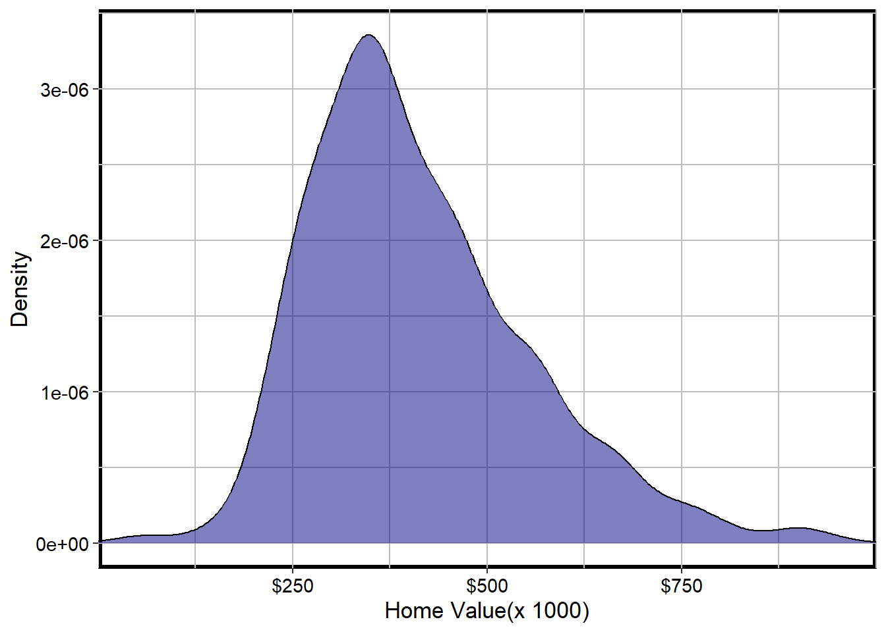
Show the home value density by county.
RplotterPkg::create_density_plot(
df = home_vals_dt[, .(estimate), by = county],
aes_x = "estimate",
aes_fill = "county",
x_title = "Home Value(x 1000)",
y_title = "Density",
x_labels = function(x)paste0("$", prettyNum(x/1000,big.mark = ",",scientific=F)),
x_limits = c(0, 1000000),
x_major_breaks = c(250000, 500000, 750000),
rot_y_tic_label = TRUE,
legend_key_width = 0.8
)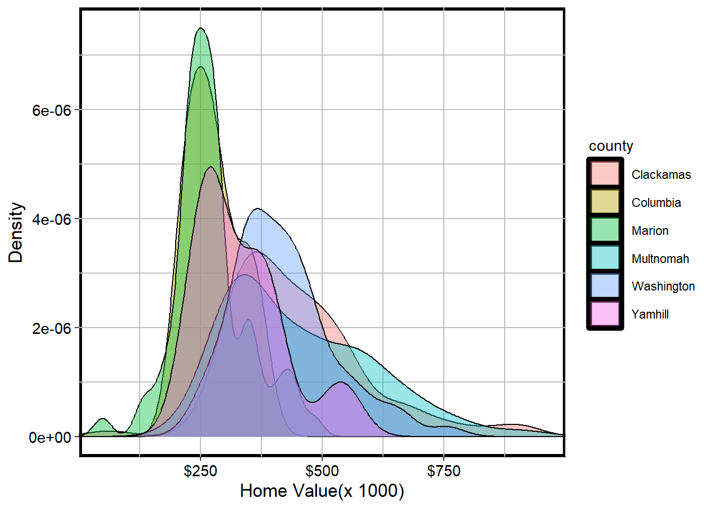
Show the home value density by county in multiple charts using RplotterPkg::multi_panel_grid() function.
counties <- levels(home_vals_dt$county)
build_plot <- function(id, df, counties){
county <- counties[id]
plot_df <- df[county == counties[[id]], ]
aplot <- RplotterPkg::create_density_plot(
df = plot_df,
aes_x = "estimate",
subtitle = county,
x_title = NULL,
x_labels = function(x) paste0("$", x / 1000, "k"),
x_limits = c(0, 1000000),
x_major_breaks = c(250000, 500000, 750000),
y_limits = c(0, 0.000008),
y_major_breaks = seq(0, 0.000008, 0.000001),
y_title = "Density",
show_minor_grids = FALSE,
rot_y_tic_label = TRUE,
density_fill = "navyblue",
density_alpha = 0.5
)
return(aplot)
}
plot_lst <- purrr::map(1:6,
build_plot,
df = home_vals_dt,
counties = counties
)
names(plot_lst) <- counties
layout <- list(
plots = plot_lst,
rows = c(1, 1, 1, 2, 2, 2),
cols = c(1, 2, 3, 1, 2, 3)
)
RplotterPkg::multi_panel_grid(
layout = layout,
title = "Median home values by Census tract, 2015-2019 ACS",
y_tick_width = 1,
plot_titles = counties
)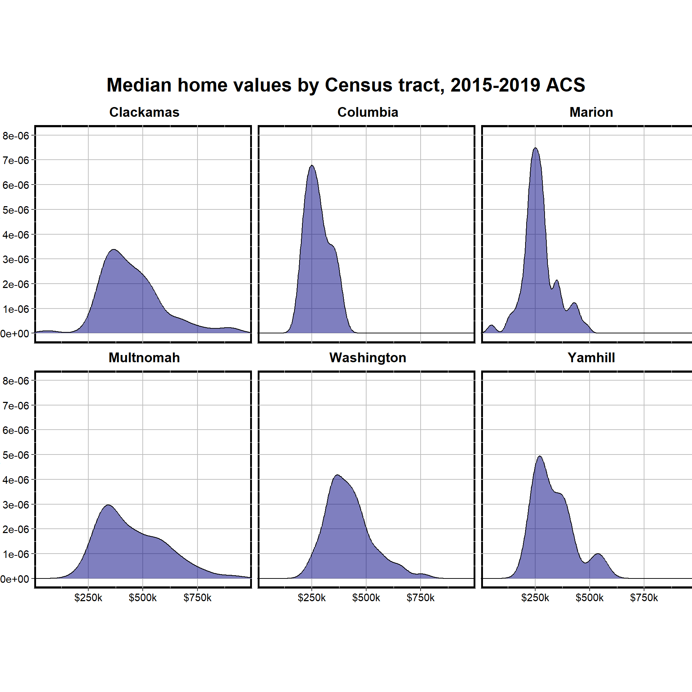
4.7 Advanced visualization with ggplot2 extensions
4.7.1 Density ridges
Repeat the above home value density by county data (home_vals_dt) in a “ridge” type of display.
Reshape home_vals_dt to a “wide” form using the “county” variable:
home_vals_wide_dt <- RcensusPkg::long_to_wide(
dt = home_vals_dt,
id_v = "tract",
parameter_col = "county",
value_col = "estimate"
)Call RplotterPkg::create_density_ridge_plot():
RplotterPkg::create_density_ridge_plot(
df = home_vals_wide_dt,
title = "Median home value: 2016-2020 ACS estimate",
variables = c(" Clackamas"," Columbia", " Marion", " Multnomah", " Washington"," Yamhill"),
x_title = "Home Value",
x_limits = c(0, 1000000),
x_major_breaks = c(250000, 500000, 750000),
density_fill = "blue",
x_labels = function(x)paste0("$", prettyNum(x/1000,big.mark = ",",scientific=F)),
density_alpha = 0.5
)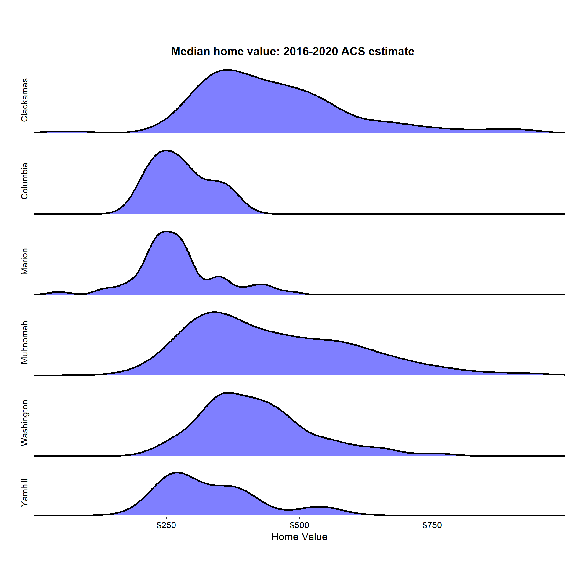
4.7.2 ggbeeswarm
Section skipped.
4.7.3 Geofaceted plots
Section skipped.
4.7.4 Interactive visualization with plotly
Take the ggplot2 object pyramid_bar_plot created above and make it interactive using the plotly package.
Using
plotly::ggplotly() is great for interactivity but comes with a price. This html article increased substantially with its addition. It works, but we’ve commented it out as you’ll note in the code below. Using Shiny might be a better option for interactive plots#plotly::ggplotly(pyramid_bar_plot)